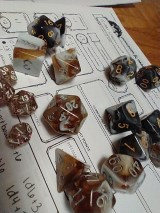

A whole lot of my free time is spent gaming. I have played World of Warcraft for too many years (like 18). I play lots of games on Steam too. The current one I'm playing through is called Pentiment. It's set in the 1500s in Europe and follows an artist who makes illuminated manuscripts as he gets caught up in some crimes far above his station.
I also read a lot: physical books, ebooks, and audiobooks. I read over 150 books last year and hope to do the same again this year!